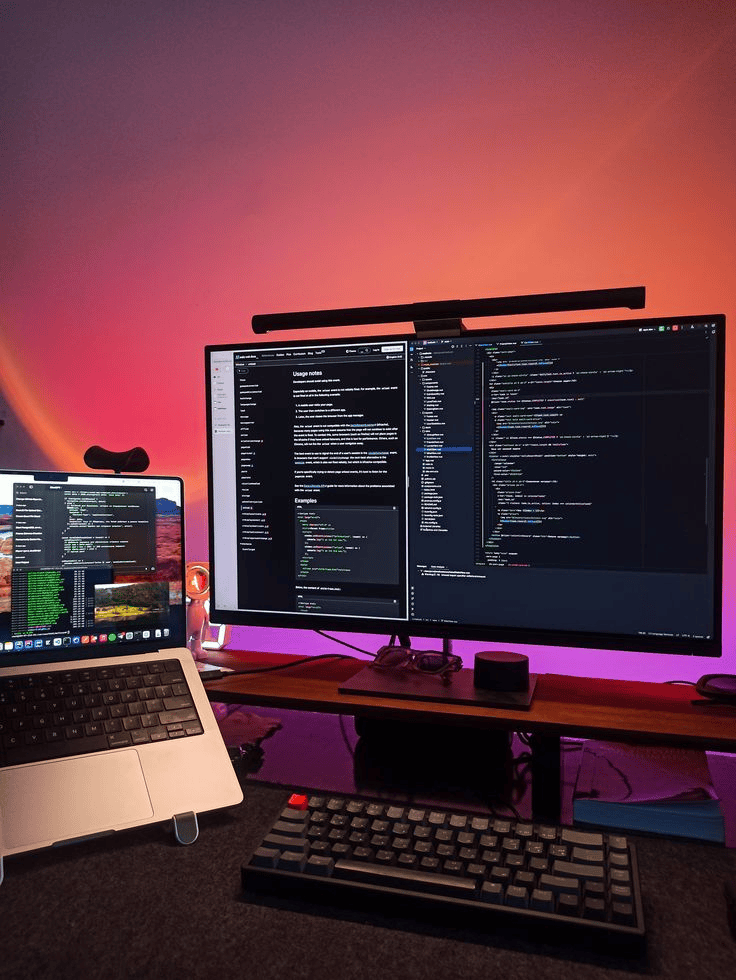
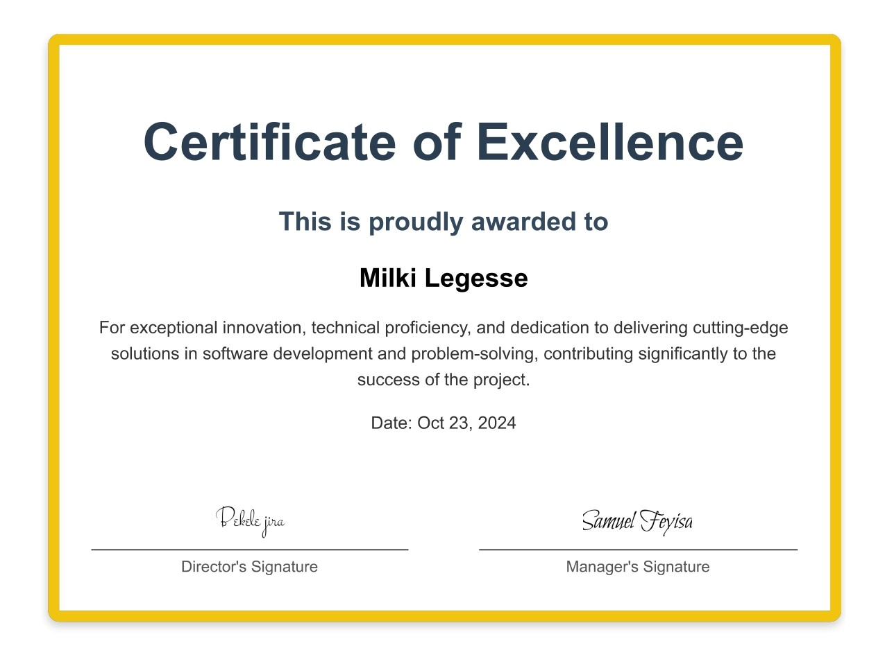

I am Milki, a third-year software engineering student with a strong foundation in JavaScript and a focus on building scalable and efficient applications. My experience includes developing a web application for task management, integrating APIs, and deploying applications on Render. I have worked on building RESTful APIs for real-time data processing and developing data visualization dashboards using JavaScript frameworks like React. Passionate about creating user-centric solutions, I strive to contribute to impactful projects that improve overall user experience and drive business outcomes.
Listen
Education
Bachelor of Software Engineering
Addis Ababa University, Ethiopia
Expected Graduation: Aug 2027
Currently pursuing a Bachelor's degree with a focus on building a strong foundation in software engineering principles, programming languages, and system architecture. Through my coursework, I've gained a deep understanding of data structures, algorithms, and the intricacies of web development, which have provided me with a solid technical skillset. This includes working with languages like JavaScript, HTML, and CSS, as well as frameworks such as React to build interactive web applications.
My studies also emphasize the importance of software testing, quality assurance, and understanding complex systems, allowing me to approach problem-solving with a comprehensive mindset. As I progress through the program, I have developed a passion for tackling real-world software engineering challenges and actively seek opportunities to apply my skills in practical settings, both through academic projects and personal coding initiatives.
Relevant Coursework:
Data Structures and Algorithms
Web Development (HTML, CSS, JavaScript, React)
Computer Architecture
Fundamentals of Software Engineering
Software Testing and Quality Assurance
Databases and SQL
Operating Systems
Achievements:
Developed a payroll management system during an internship, integrating biometric verification and tax calculations.
Certified in Full-Stack Web Development, covering frameworks like React and Node.js.
Completed 100+ LeetCode problems
Active member of the university's Google Developers Club
Certified in Advanced Java Programming, with hands-on experience building scalable applications.
Expertise

Programming Languages:
JavaScript
TypeScript
Python
Java
SQL
Web Development:
Proficient in React, HTML5, CSS3, and Node.js. Experience with building responsive and user-centric interfaces.
Backend Development:
Skilled in creating RESTful APIs, integrating third-party APIs, and using databases like Supabase and MongoDB.
DevOps:
Experience deploying applications on Render and version control with Git/GitHub.
Problem Solving:
Completed 50+ LeetCode problems focusing on sliding window, dynamic programming, and greedy algorithms.
Work Experience
Intern, NH Business Center (Jul 2024 - Oct 2024)
Contributed to developing a payroll website with tax integration, automating payroll processes for businesses. Implemented biometric authentication and attendance tracking using a deep learning Java framework, improving accuracy and security. Enhanced data management and user authentication through back-end development with Java and SQL. Collaborated with senior developers to resolve issues, optimize performance, and enhance the user experience. Gained practical exposure to machine learning techniques applied to biometric data, deepening expertise in AI technologies.
Exploring Artificial Intelligence: One of my favorite hobbies is diving into the fascinating world of AI, where creativity meets cutting-edge technology. I enjoy experimenting with machine learning algorithms, training models to uncover patterns in data, and developing small AI-powered projects that solve practical problems. From building chatbots that can engage in meaningful conversations to creating recommendation systems that mimic human decision-making, this hobby constantly challenges me to think innovatively. I find joy in exploring platforms like Hugging Face and TensorFlow, where I can tinker with tools and libraries that make AI accessible. For me, AI is not just about technology—it’s about understanding how intelligence works and using that knowledge to create something impactful. It’s a journey of constant learning and discovery, and it fuels my passion for pushing the boundaries of what’s possible.
AI, once unimaginable, is now just a tap awayA street-sweeper that implements AI
Certificate

Testimonials
The quality of work and attention to detail exceeded our expectations.
Delivered the project on time and with exceptional quality.